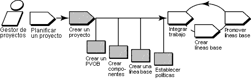

Visión general
En el diagrama siguiente se ilustra el flujo de trabajo para la gestión de proyectos de UCM. En esta guía de la
herramienta se tratan las áreas sombreadas.

Esta guía de la herramienta se aplica al ejecutar Microsoft Windows. Describe características disponibles en
ClearCase completo.
Terminología
Existen algunas diferencias entre la terminología de RUP y la que se utiliza en ClearCase. Las definiciones
siguientes de la terminología específica de la herramienta se proporcionan como ayuda para aclarar las diferencias.
Pasos de la herramienta
Para establecer un proyecto de UCM, debe:
-
Crear un depósito para almacenar la información del proyecto
-
Crear componentes que contengan el conjunto de archivos en los que trabajan los desarrolladores
-
Crear líneas base que identifiquen las versiones de los archivos con las que los desarrolladores
inician el trabajo
-
Crear un proyecto de UCM
Los proyectos de ClearCase requieren una VOB de proyecto (PVOB), que se utiliza para almacenar objetos de UCM e
información relacionada.
-
Para iniciar el asistente para la creación de VOB, en la barra de tareas de Windows pulse Inicio > Programas
> Software Rational > Rational ClearCase > Administración > Crear VOB.
-
En la primera pantalla, asegúrese de que se ha seleccionado el recuadro de selección Datos del proyecto de
UCM.
-
Seleccione Ayuda, que proporciona la guía para completar el asistente.
 Para obtener
información detallada, consulte el tema de la ayuda en línea de ClearCase que trata sobre el asistente para la
creación de VOB. Para obtener
información detallada, consulte el tema de la ayuda en línea de ClearCase que trata sobre el asistente para la
creación de VOB.
Para agrupar un conjunto de elementos de archivo y directorio relacionados en un proyecto de UCM, se utilizan
componentes. Por lo general, los elementos que forman un componente se desarrollan, integran y liberan juntos. Un
proyecto debe contener, como mínimo, un componente y puede contener varios componentes. Los proyectos pueden compartir
componentes.
Puede crear un componente con el asistente para la creación de VOB:
-
Pulse Inicio > Programas > Administración de Rational ClearCase > Crear VOB.
-
En el primer paso del asistente, seleccione Crear VOB como un componente de UCM. Los proyectos de UCM pueden
utilizar la nueva VOB como un componente.
También puede migrar datos existentes almacenados en VOB a proyectos de UCM al convertir VOB existentes en componentes:
-
Navegue al Explorador de proyectos de ClearCase. En la barra de tareas de Windows, pulse Inicio > Programas
> Software Rational > Rational ClearCase > Explorador de proyectos.
-
Seleccione la carpeta raíz de la PVOB.
-
Pulse Herramientas > Importar VOB. Se muestra el recuadro de diálogo Importar VOB. En la lista VOB
disponibles, seleccione la VOB que desea convertir en un componente.
-
Para mover la VOB a la lista VOB para importar, pulse Añadir.
-
Una vez que haya finalizado, pulse Importar.
 Consulte la sección que trata
sobre la "creación de componentes" del manual de ClearCase titulado Managing Projects. Consulte la sección que trata
sobre la "creación de componentes" del manual de ClearCase titulado Managing Projects.
3. Crear líneas base que identifiquen las versiones de los archivos con las que los
desarrolladores inician el trabajo
Las líneas base identifican una versión de cada elemento de un componente, representando una configuración de origen
estable a partir de la cual iniciar el trabajo. El modelo de UCM necesita utilizarlas para acceder a archivos y
directorios de un componente.
Cuando se crean componentes de ClearCase partiendo de cero, se crean con una línea base inicial.
Si va a convertir una VOB de ClearCase básico en un componente, puede crear líneas base de versiones etiquetadas
existentes. Compruebe si las versiones estables más recientes se han etiquetado. Si no es así, debe crear un tipo de
etiqueta y aplicarlo a las versiones que prevé incluir en el proyecto.
Para obtener
información detallada, consulte el tema de la ayuda en línea de ClearCase que trata sobre la utilización del
asistente para aplicar etiquetas.
Para crear una línea base a partir de un conjunto de versiones identificadas por un tipo de etiqueta:
-
En el Explorador de proyectos de ClearCase, seleccione la carpeta raíz de la PVOB. Pulse Herramientas >
Importar etiqueta. Se muestra el asistente para la importación de etiquetas.
-
En la lista Componentes disponibles, seleccione el componente que contiene la etiqueta a partir de la que
desea crear una línea base.
-
Para mover el componente a la lista Componentes seleccionados, pulse Añadir.
-
Cuando haya finalizado, pulse Siguiente.
-
En el Paso 2 del asistente para la importación de etiquetas, seleccione el tipo de etiqueta que desea importar.
Escriba el nombre de la línea base que desea crear para las versiones que identifica dicho tipo de etiqueta.
Seleccione el nivel de promoción de la línea base. Pulse Finalizar.
Este procedimiento crea una de las líneas base de la base del proyecto, que identifica las versiones de archivos con
las que los desarrolladores inician el trabajo.
Consulte los
temas de la ayuda en línea de ClearCase que tratan sobre la creación y gestión de líneas base.
Después de crear una VOB de proyecto y los componentes que va a utilizar, puede crear el proyecto de UCM. Para ello,
debe proporcionar un nombre de proyecto e identificar líneas base y componentes de proyecto para el proyecto. ClearCase
proporciona un asistente para la creación de nuevos proyectos que le guía a través de los pasos de este procedimiento.
-
En el Explorador de proyectos de ClearCase, seleccione la carpeta raíz de la PVOB. Pulse Crear nuevo
proyecto en el menú emergente para iniciar el asistente.
-
Siga los pasos que le indica el asistente. Puede obtener ayuda para cada paso pulsando el botón Ayuda de
cada pantalla.
-
En el Paso 3 del asistente, Añadir las líneas base de componentes que utilizar en este proyecto, especifique las
líneas base que ha creado en el procedimiento 3 anterior.
-
En los dos pasos siguientes del asistente se le solicita que especifique información de configuración detallada
para el proyecto, incluidas políticas de desarrollo y si desea habilitar el proyecto para trabajar con una base de
datos de solicitudes de cambio de Rational. La configuración se puede adaptar a fin de que satisfaga las
necesidades específicas del proyecto. Para obtener una descripción de todas las opciones disponibles, consulte la
ayuda en línea.
Puede obtener una
visión general de este procedimiento en los temas de la ayuda en línea de ClearCase que tratan sobre:
-
Flujo de trabajo para la creación de proyectos
-
Asistente para proyecto nuevo
|